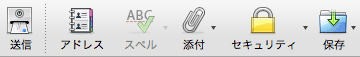
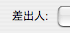
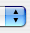
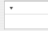
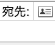
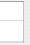
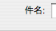
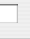

【→練習問題】
通知文書とは？
通知文書とは、関係者に必要な事項を知らせるために書く社内文書のことである。
通知文書の種類
会議の開催や研修会の実施などを参加対象者に知らせる文書、希望者や意見を募集する文書、停電やシステムメンテナンスなどを知らせる文書などがある。
通知文書の基本
通知文書は、情報を知らせることを目的とする社内文書なので、必要な情報を明確にわかりやすく書くことが重要である。そのために、以下のポイントに注意して書くようにする。

 何に関する通知なのか、誰が何をすればよいのかをはっきりと書く
何に関する通知なのか、誰が何をすればよいのかをはっきりと書く
問い合わせの必要がないように、必要な情報を漏れなく記載する
敬語表現は最小限のものにする（あまりていねいに書く必要はない）
あいさつなどの儀礼的な表現はできるだけ省略する
通知文書の書き方
例１：会議の開催通知
営発第28号
平成21年４月７日
営業部員各位
営業部長
営業会議の開催について（通知）
下記のとおり、営業会議を行なうので、出席してください。
記
- 日時 ４月20日（水）10時から12時まで
- 場所 ミーティングルーム（４階）
- 議題 次期営業計画について
- 添付 前期売上表
- 備考 上記議題に関係する資料を持参のこと
以上
通知文書では、あいさつ文や敬語は不要である（「×開催いたしますので、」、「×万障お繰り合わせの上、ご出席くださいますようお願い申し上げます。」などとはしない）
指示を伝える文書なので、一般的には「行ないますので」のようにはしない（「行なうので」「開催するので」のようにする）
必要な情報は、記書き（箇条書き）にしてわかりやすくまとめる
日時・場所だけでなく、議題や必要な書類についても書いた方がよい
表現のバリエーション
- 下記のとおり、営業会議を行なうので、出席してください。
- → 下記の通り、販売会議を開催するので、ご出席ください。
［※会議参加者が、支店長やマネージャーなどの場合には、ややていねいな表現を使うことがある］
- → 企画課ミーティングを下記により開催するので、出席願います。
［※通知文書で伝えられる内容は、一般に決定事項（＝指示・命令）である。「願います」とした場合には、通知文書よりも拘束力の弱い依頼文書や案内文書と思われる可能性があるので注意すること］
- 議題 次期営業計画について
- → 議題 別紙参照
［※議題が多いときや複雑なときには、別紙にまとめるとよい］
- 備考 上記議題に関係する資料を持参のこと
- → 資料 当日席上で配布
- → 備考 前回配布済みの資料（「次期中期計画概要」）を持参すること
［※持ってくるべき資料があるときは、はっきりと指示する］
- → 備考 添付資料に記入のうえ前日までに提出のこと
［※提出するものがあるときは、締切をはっきりと指示する］
- → ※なお、○○を○月○日までに○○に提出してください。
［※副文として箇条書きの項目の下部（「以上」の上）に書き添えるときは、「なお、」「その他、」などの語句をつけて、主文と同様の表現を用いる］
- ミーティングルーム【名詞】 (meeting room)［※会議室の意味］
- ミーティング【名詞】 (meeting)
例２：プロジェクトメンバーの募集通知
本総第108号
平成21年６月29日
課長各位
総務部長
環境プロジェクトメンバーの募集について（通知）
標記について、下記により研究協力者を募集するので、課員に周知してください。
記
- 募集要項 添付資料参照
- 申込方法 ７月31日(水)までに別紙様式により総務部総務課宛に申し込む
以上
担当：総務部総務課・小林
内線6099
募集要項のように内容の多いものは添付資料にする
募集要項に書かれていても、申込方法を明記しておくようにする
細部の問合せが予想されるので、問合せ先（担当者）を書いておく（箇条書きの項目に含めるのもよい）
表現のバリエーション
- 標記について、……
- → このたび、エコビジネスの展開を図るため、環境プロジェクトチームを立ち上げることとなりました。ついては、……
［※プロジェクト発足の経緯や目的などを簡単に説明してもよい］
- 課員に周知してください。
- → 所属の社員に周知させてください。
［※「（課長が課員に）周知してください。」と「（課長が課員に）周知させてください。」は、同じ意味になる］
- プロジェクトメンバー【名詞】 project member
- 研究協力者【名詞】（けんきゅうきょうりょくしゃ）
- 周知する【３類動詞】（しゅうちする）
- 募集要項【名詞】（ぼしゅうようこう）
- エコビジネス【名詞】 (eco-business)［※「環境ビジネス」ともいう］
例３：システムメンテナンスの実施通知
平成21年７月10日
社員各位
総務部長
システムメンテナンスの実施について（通知）
社内ネットワークのセキュリティ強化のため、下記によりシステムメンテナンスを行なうので承知してください。
記
- 日 時 平成21年７月21日(金) ８時から19時まで（予定）
- 施工者 育達ネットワークサービス社
なお、メンテナンス中は、一部の端末でインターネットへの接続ができないので注意してください。
以上
担当：総務部データ課・近藤
内線5963
知っておかなければならない内容を伝えるときには「承知してください。」となる
実施に伴って起こりそうなトラブル（上の例では、インターネットに接続できないこと）には、あらかじめ注意をしておくようにする
表現のバリエーション
- システムメンテナンスの実施について（通知）
- → システムメンテナンス実施のお知らせ
- なお、メンテナンス中は、一部の端末でインターネットへの接続ができないので注意してください。
- → なお、社内ファイルサーバのデータ消失などのトラブルが考えられるので、あらかじめデータを保存するよう気をつけてください。
［※重大な問題が生じる可能性があるときには、対処方法を明確に指示しておく］
- システムメンテナンス【名詞】 (system maintenance)
- ネットワーク【名詞】 (network)
- セキュリティ【名詞】 (security)
［※「セキュリティー」とも書くが、現在では「セキュリティ」の方が一般的］
- セキュリティ強化【名詞】（セキュリティきょうか）
- 施工者【名詞】（しこうしゃ／せこうしゃ）
- メンテナンス【名詞】 (maintenance)
- 端末【名詞】（たんまつ）
- トラブル【名詞】 (trouble)
- ファイルサーバ【名詞】 (file server)
例４：社員証の配布通知
平成21年４月９日
社員各位
人事部長
社員証の配布について（通知）
社員証のＩＣカード化に伴い、４月15日に新社員証を配布します。
なお、現行社員証（バーコード入り）の有効期限は４月20日ですので、４月25日までに人事部に返却してください。
以上
担当 人事室 笹川
内線2350
重要な配布物では、配布期日をはっきり書くようにする
社員証の切り替えなどでは、古いものの処理方法をはっきりと指示する
表現のバリエーション
- 社員証のＩＣカード化に伴い、４月15日に新社員証を配布します。
- → ３月31日の社員カード有効期限切れに伴い、３月15日より順次新カードを配布するのでお知らせします。
- 社員証【名詞】（しゃいんしょう）
- ＩＣカード【名詞】(Integrated Circuit card)
- 現行【名詞】【名詞】（げんこう）
- バーコード(barcode)
- 有効期限【名詞】（ゆうこうきげん）
- 返却する【３類動詞】（へんきゃくする）
通知メールの書き方
比較的簡単な連絡事項やコンピュータシステムなどに関わる事項では、電子メールを使うことも多い。
電子メールでは、紙の社内文書とは書き方が異なる点もある。以下では、通知メールの書き方について説明する。
例１：会議の招集通知メール
|
作成：販売促進会議のお知らせ |
|
|  |
|
|
|

|
鈴木 洋之 <m_suzuki@xxx.co.jp> |
|

|
|

|
mr_list@xxx.co.jp
|

|
|

|
販売促進会議のお知らせ
|

|
各位
総務部総務課 鈴木です。
下記の通り販売促進会議を行ないますので、お集まりください。
都合により参加できない方は、あらかじめご連絡ください。
●日時：９月23日
●場所：５階会議室
●議題：(1)上半期の販売実績報告、(2)下半期の販促計画について
●出席者：総務部長、販売課長、マネージャー各位、販売本部各位
以上、よろしくお願いします。
|
|
|
本文は『です・ます体』で平易に書けばよい（社内文書特有の言い回しなどは、特に使わなくてもかまわない）
文書番号や発信者名、標題などは特に書かなくてもかまわない
箇条書きにするときも、「記」「以上」などは省略して簡潔にする
メールでは、すべて左寄せにしてかまわない（逆に見づらくなるので、スペースなどを打ち込んで無理に位置を揃えないこと）
表現のバリエーション
- 下記の通り販売促進会議を行ないますので、お集まりください。
- → 営業計画に関する会議を行ないますので、関係者は必ずご出席ください。
- 都合により参加できない方は、あらかじめご連絡ください。
- → 欠席の場合は、本メールの返信にてお知らせください。
- 販売促進【名詞】（はんばいそくしん）［※「販促」と略すことも多い］
- あらかじめ［予め］【副詞】（あらかじめ）
- 販売実績【名詞】（はんばいじっせき）
- 販促計画【名詞】（はんそくけいかく）
- マネージャー【名詞】(manager)
例２：会議日程の変更通知
|
作成：企画課会議開催の変更について |
|
|
|
|
|
|
企画課 磯辺 <isobe@xxx.co.jp> |
|
|
|
|
xxx@xxx.co.jp
|
|
|
|
企画課会議開催の変更について
|
|
企画課の磯辺です。
企画課会議の日時が変更になりましたのでお知らせします。
新しい日時は下記の通りです（場所は変更ありません）。
---------------------------------------------
日時：２月20日(火) 15時〜16時まで
場所：中会議室（２階）
---------------------------------------------
以上、よろしくお願いします。
|
|
|
タイトル（件名）は稀に文字化けすることもあるので、「標記の会議」のような書き方はしない方がよい
強調したい部分は、表記符号などを使って目立たせる（上の例では、ハイフンを連続して罫線としている）
表現のバリエーション
- 企画課会議の日時が変更になりましたのでお知らせします。
- → ８月定例会議は、下記のとおり変更となりました。
- → 営業会議は、６月５日(月)開催に変更となりました。時間は９時〜10時、場所は大会議室のまま変更はありません。
例３：サーバメンテナンスの実施通知
|
作成：サーバメンテナンスのお知らせ |
|
|
|
|
|
|
Tanaka_Kei <xxxxx@xxx.co.ip> |
|
|
|
|
xxxx@xxxx.co.jp,zzzz@xxxx.co.jp,yyyy@xxxx.co.jp
|
|
|
|
サーバメンテナンスのお知らせ
|
|
情報センターからのお知らせです。
以下の通りサーバメンテナンスを行ないます。
メンテナンス中は、メールの送受信ができませんので注意してください。
１、日時：６月29日(水) AM 8:00 - PM 3:00
２、対象：社内メールサーバ
なお、メンテナンス中もインターネットの利用は可能です。
以上、よろしくお願いします。
-----
担当：情報センター 田中（内線 1129）
|
|
|
優先度の高い情報（上の例では、メールの送受信ができなくなること）は本文の上の方（ウィンドウをスクロールしなくても読めると思われる位置）に配置する
改行（１行空け）などを使って見やすくレイアウトする
通知メールでは、１行の長さはできるだけ短くした方がよい（文字が込んでいると、読み飛ばされる恐れがある）
- サーバ【名詞】(server)
- 送受信【名詞】（そうじゅしん）
- メールサーバ【名詞】(mail server)
【→練習問題】